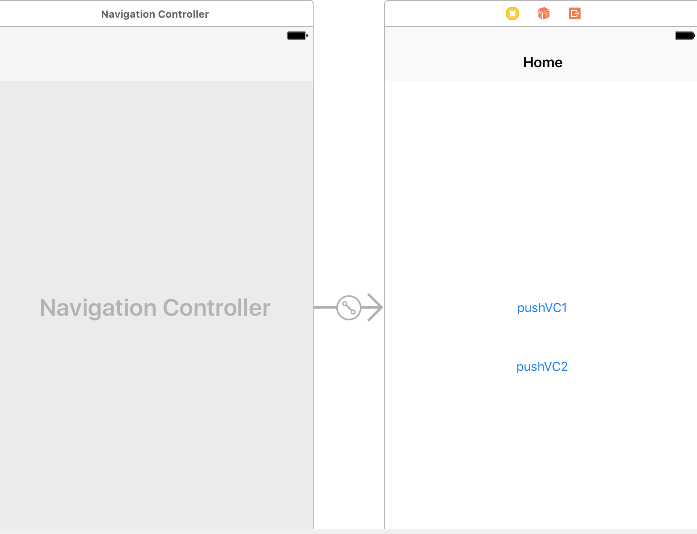
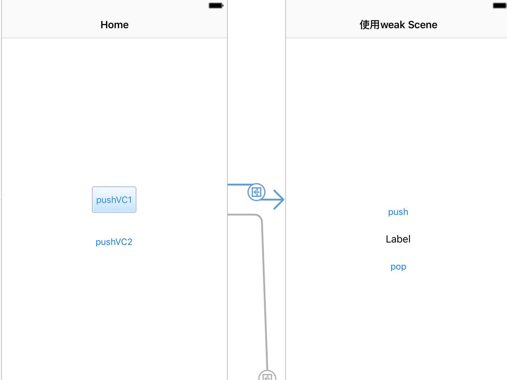
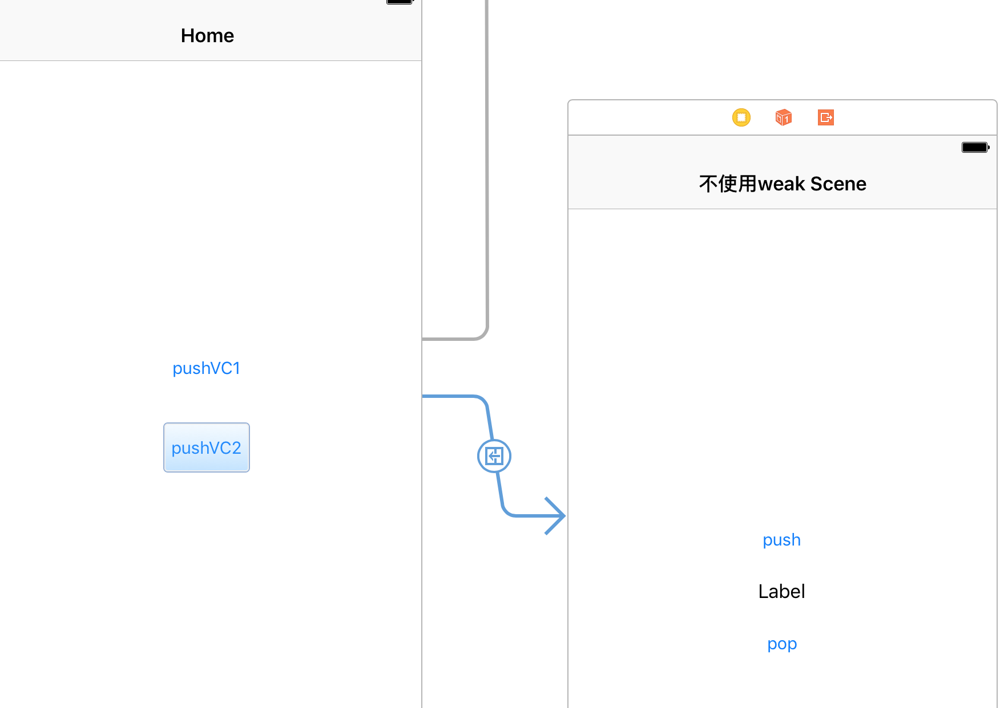
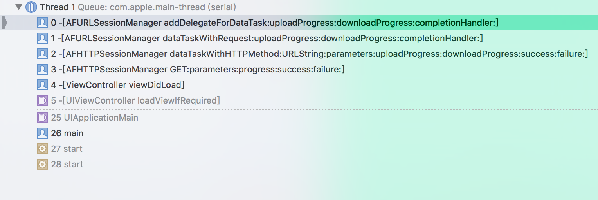

循环引用
前言
iOS中使用block你一定会遇到循环引用问题，解决的办法也很简单使用weak弱引用，但对于很多的开发者对于weak滥用，而且weak self并不是没有开销的一件事情，同时导致一系列问题，所以本文将通过几种场景来分析，在常见的场景中哪些必须使用weak 哪些不使用。如有错误或不妥欢迎留言 代码在Github Example 【注意】 本篇主要讲解的是ARC下实用场景，想要了解block原理的朋友请参考谈Objective-C block的实现 唐巧
常用场景
UINavigationController两页面传递参数使用block UIViewAnimationWithBlocks 执行动画的block GCD的block NSArray enumerateObjectsUsingBlock MJRefreshHeader 下拉刷新的block AFNetworking 的Block
场景分析
UINavigationController Scene
代码这里 首先我们在Main.storyboard中创建一个UINavigationViewController 指定一个rootViewController

pushVC1跳转使用weak的实例 【scene1ViewController】

scene1ViewController代码如下
class scene1ViewController: UIViewController {
@IBOutlet weak var textLabel: UILabel!
//持有下一个VC 出现在下一个VC需要频繁使用并且需要很多时间去加载的情况，让下一个VC的生命周期保持跟当前一致
var nextVC:nextViewController?
override func viewDidLoad() {
super.viewDidLoad()
}
override func didReceiveMemoryWarning() {
super.didReceiveMemoryWarning()
}
@IBAction func pushClick(_ sender: UIButton) {
if nextVC == nil {
//获取storyboard中的 ViewController
let story = UIStoryboard.init(name: "Main", bundle: nil)
nextVC = story.instantiateViewController(withIdentifier: "nextViewController") as? nextViewController
nextVC?.testBlock={[weak self] (param:String) in
self?.doSomething(str: param)
}
}
self.navigationController?.pushViewController(nextVC!, animated: true)
}
@IBAction func popClick(_ sender: UIButton) {
_ = self.navigationController?.popViewController(animated: true)
}
func doSomething(str:String){
self.textLabel.text=str
}
deinit {
print("scene1ViewController deinit")
}
}
nextViewController 代码如下
var testBlock:((_ para:String)->Void)?
override func viewDidLoad() {
super.viewDidLoad()
self.title="第三个控制器"
}
override func didReceiveMemoryWarning() {
super.didReceiveMemoryWarning()
// Dispose of any resources that can be recreated.
}
@IBAction func popClick(_ sender: UIButton) {
if self.testBlock != nil {
self.testBlock?("next return String")
}
_ = self.navigationController?.popViewController(animated: true)
}
在每一个ViewController都重写deinit方法
类似objective-c (void)dealloc 可以监控当前VC在pop之后是否释放
deinit {
print("scene1ViewController deinit")
}
deinit {
print(" nextViewController deinit")
}
运行起来可以看到只有当scene1ViewController pop的时候nextViewController和scene1ViewController 同时释放并打印
scene1ViewController deinit nextViewController deinit
这种场景下就要使用weak，你可以尝试不使用weak查看 deinit 的打印情况
分析在scene1 VC中持有了nextVC、同时代码block中出现了self相关的属性和方法 ，则nextViewController 使用属性持有了scene1 造成 循环引用
scene1VC-> nextVC nextVC->self.dosomething
nextVC?.testBlock={[weak self] (param:String) in
self?.doSomething(str: param)
}
pushVC2跳转不使用weak的实例 【scene2ViewController】

scene2ViewController代码如下
class scene2ViewController: UIViewController {
@IBOutlet weak var textLabel: UILabel!
override func viewDidLoad() {
super.viewDidLoad()
self.title="不使用weak Scene"
}
override func didReceiveMemoryWarning() {
super.didReceiveMemoryWarning()
}
@IBAction func pushClick(_ sender: UIButton) {
//获取storyboard中的 ViewController
let story = UIStoryboard.init(name: "Main", bundle: nil)
let nextVC = story.instantiateViewController(withIdentifier: "nextViewController") as! nextViewController
nextVC.testBlock={(param:String) in
self.doSomething(str: param)
}
self.navigationController?.pushViewController(nextVC, animated: true)
}
@IBAction func popClick(_ sender: UIButton) {
_ = self.navigationController?.popViewController(animated: true)
}
func doSomething(str:String){
self.textLabel.text=str
}
deinit {
print("scene2ViewController deinit")
}
}
为什么当前这种模式不需要呢？
navigationController ->scene2 VC navigationController ->nextViewController nextViewController ->Scene2 VC
在scene2 VC 中没有持有 nextViewController，nextViewController是由navigationController持有 ,nextViewController虽然持有了Scene2 VC nextViewController 在pop 的时候执行完这个block 就会销毁，能正常释放。 不会循环引用
UIViewAnimationWithBlocks 执行动画的block
我们经常看到如下代码
[UIView animateWithDuration:0.25 animations:^{
self.testView.frame=CGRectMake(80, 100, self.testView.frame.size.width, self.testView.frame.size.height);
}];
这里是可以直接写self的，因为这是一个类方法，当前的self并没有直接或间接持有这个block。不会循环引用 引用示意图
animation framework -> block block -> self
GCD的block 跟UIViewAnimationWithBlocks同一个道理self并不会持有block, 所以不会循环应用
GCD -> block block -> self
NSArray enumerateObjectsUsingBlock 也不会引起循环引用
[self.dataArray enumerateObjectsUsingBlock:^(NSString *str, NSUInteger idx, BOOL * _Nonnull stop) {
[self dosomething:str];
}];
Foundation framework-> block block -> self
MJRefreshHeader 下拉刷新的block
//下拉刷新
WEAKSELF;
self.tableView.mj_header=[MJRefreshNormalHeader headerWithRefreshingBlock:^{
[weakSelf dosomething];
}];
在这个实例中，我是使用weakSelf的原因是什么呢？
self->tableView self.tableView->mj_header mj_header.block->self
AFNetworking 的Block
测试代码 鉴于当前这个时间节点，大家都是使用AFNetworking 3.X的版本，所以当前分析基于3.0以上版本
AFHTTPSessionManager *session = [AFHTTPSessionManager manager];
[session GET:testURL parameters:nil progress:nil success:^(NSURLSessionDataTask * _Nonnull task, id _Nullable responseObject) {
NSLog(@"请求成功---%@", responseObject);
self.testLabel.text=@"成功";
} failure:^(NSURLSessionDataTask * _Nullable task, NSError * _Nonnull error) {
NSLog(@"%@",error);
}];
AFNetworking 中success block 和failure block 通过如下调用栈 设置到一个delegate的对象上

摘录AFNetworking 方便大家在源码中搜索
- (void)addDelegateForDataTask:(NSURLSessionDataTask *)dataTask
uploadProgress:(nullable void (^)(NSProgress *uploadProgress)) uploadProgressBlock
downloadProgress:(nullable void (^)(NSProgress *downloadProgress)) downloadProgressBlock
completionHandler:(void (^)(NSURLResponse *response, id responseObject, NSError *error))completionHandler
{
AFURLSessionManagerTaskDelegate *delegate = [[AFURLSessionManagerTaskDelegate alloc] init];
delegate.manager = self;
delegate.completionHandler = completionHandler;
dataTask.taskDescription = self.taskDescriptionForSessionTasks;
[self setDelegate:delegate forTask:dataTask];
delegate.uploadProgressBlock = uploadProgressBlock;
delegate.downloadProgressBlock = downloadProgressBlock;
}
在NSURLSessionTaskDelegate 的执行这个block
#pragma mark - NSURLSessionTaskDelegate
- (void)URLSession:(__unused NSURLSession *)session
task:(NSURLSessionTask *)task
didCompleteWithError:(NSError *)error
{
........此处省略
dispatch_group_async(manager.completionGroup ?: url_session_manager_completion_group(), manager.completionQueue ?: dispatch_get_main_queue(), ^{
if (self.completionHandler) {
self.completionHandler(task.response, responseObject, serializationError);
}
........此处省略
}
通过大致分析
AFHTTPSessionManager -> AFURLSessionManagerTaskDelegate AFURLSessionManagerTaskDelegate ->ViewController block
未发生循环引用问题 所以可以直接使用self
注意 如下代码 有隐藏的内存泄漏问题
AFHTTPSessionManager *session = [AFHTTPSessionManager manager];
感兴趣的朋友请翻阅如下链接，不再本文讨论之列 NSURLSession is holding a strong reference to its delegate Possible memory leak in AFURLSessionManager